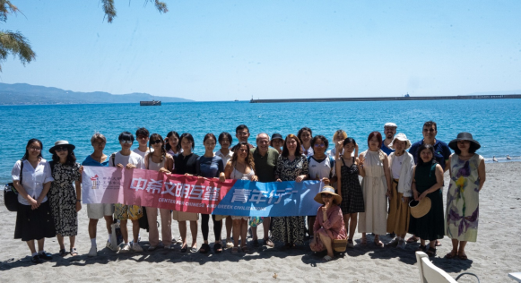

教务处 · 教学通知
项目发布 |【大川视界】关于选拔学生参加2025年寒假“中希文明互鉴青年行”学分项目的通知
发布时间：2024-10-23
为适应高等教育国际化的新趋势，提升学生国际视野，促进学生对文明共生、文明互鉴的思考，学校现启动选派学生参加2025年寒假“中希文明互鉴青年行”学分项目的工作。为保证此项工作的顺利进行，现就有关事项通知如下： 一、项目背景 习近平总书记指出，“中华文明源远流长，古希腊文明影响深远，2000多年前，中希两大文明在欧亚大陆两端交相辉映，为人类文明演进做出了巨大贡献”。作为中希文明互鉴中心的中方四所成员高校之一，四川大学落实国家战略，助力“中希文明互鉴中心”建设，携手希腊历史最悠久的高等院校——伊奥尼亚大学，共同组织2025年寒期“中希文明互鉴青年行”学分项目。 英国著名诗人雪莱说：“我们都是希腊人，我们的法律、文学、宗教和艺术之根都在希腊。”行走在西方文明的起源地，同学们将沉浸式研究、体验和学习古希腊文明的魅力，思考如何促进世界古老文明的相互借鉴，提高对文化多样性和包容性的理解和认识。 二、项目简介 希腊伊奥尼亚大学位于地中海中的明珠、联合国世界文化遗产-科孚岛。我校和伊奥尼亚大学精心设计了冬季访学线路，同学们将奔赴科孚岛、约阿尼纳、德尔菲、温泉关、天空之城和雅典等地，在来自希腊和其他国家的考古学家、历史学家、哲学家和戏剧家的悉心指导下，在行走中、在课堂里、在考古现场沉浸式学习古希腊的历史、哲学、神话、考古、文学、艺术、宗教、政治学以及科学和医学成就，见证从古希腊、古罗马、拜占庭再到奥斯曼帝国的各大文化遗迹，实地触摸先贤智慧和历史脉络。此次学习将提高同学们对文化包容性和理解力的认识，促进同学们对文明互鉴、共生发展的思考。通过结业要求的同学可获得3个欧洲学分（=1.5个美国学分）。项目详情及日程详见附件1；科孚岛介绍见附件2。 课程亮点：亚里士多德说，“行走是记忆的连接线”。本项目精心连接了希腊各个历史时期的代表性地点，采用各种教学方式和手段相结合，现场教学（On Site Teaching）、实地访问（Field Learning）和互动式课堂教学（Interactive Teaching）满足不同学习类型的学生对学习的需求，让同学们在行走中沉浸式学习和体验人类古代文明的辉煌成就，把原本枯燥的史料呈现为生动的、可触摸的历史史诗。 三、项目时间与费用 （一）项目时间：两周 2025年1月12日飞抵希腊科孚岛。 2025年1月25日从雅典返程。 （二）项目费用 学费 2200欧，约合人民币1.7万元 包含 学费、住宿、一日两餐（含欢迎宴和欢送宴）、 所有博物馆和景点门票、导游费和转换城市的海陆交通费。赠送大部队的机场接送。 不包含 保险费、签证费用、机票和其他个人消费 三、报名条件 1、热爱祖国、品德良好、身心健康、积极进取； 2、全日制在校本科生和研究生（含博士）；出发时需年满18岁。专业不限，尤其适合对文明起源感兴趣的同学，包含但不限于文学、历史、艺术、哲学、语言、考古、博物馆、宗教、政治学、医学和其他理工科专业的同学。 3、遵纪守法，无违纪记录，愿意服从统一管理； 4、能适应全英文课堂教学；通过CET4、CET6、TEM4或TEM8（满足一项即可）；一年级同学可提供高考英语成绩。 5、本科生GPA ≥ 3.0 ，研究生GPA ≥ 3.3。 6、因席位有限，限报30名（如报名同学多，可适当扩容）。由伊奥尼亚大学发送录取通知书和缴费渠道。 四、项目报名时间与报名方式 （一）报名时间：即日起至2024年11月13日 项目咨询：国际合作与交流处85401551 报名流程：（需在两校同时报名） 1、本科生登录教务处国内国际合作交流管理系统 http://jxyw.scu.edu.cn:8081/gjjl/， 选择 “中希文明互鉴青年行（“大川视界”）”进行在线申请。报名咨询电话：教务处合作交流科 85402398。 （1）请下载登录界面操作手册后进行操作，若遇技术问题，可打电话13183867686 或QQ：1134372115咨询。 （2）为实现项目报名工作流程化、信息化，学院、学校将通过系统完成项目审批（报名学生无需再交纸质材料），请学生在线报名后及时告知学院教务办，请学院相关人员在系统中于截止日期内完成学院审核。 （3）川大所修课程中文成绩以系统计算为准，若有疑问，请持成绩单原件与教务处合作与交流科联系。 2. 研究生（含博士）通过研究生院申请 （1） 申请人 ：登录四川大学研究生管理系统——国际学术交流申请应用，选择“寒暑假访学项目申请”，选择相应的访学项目，填写申请，提交并打印出纸质《申请表》，将纸质《申请表》递交导师、学院审核。 （2） 导师 ：登录四川大学研究生管理系统——国际学术交流应用，在“寒暑假访学项目”中审核并在纸质版《申请表》上签署意见、签字。 （3） 学院 ：学院研究生教务老师登录四川大学研究生管理系统——国际学术交流应用，在“寒暑假访学项目”中审核，并由学院主管领导在纸质版《申请表》上签署意见、签字、盖公章。 （4）学院审核后，纸质《申请表》以学院为单位报研究生院3-325培养办公室。 报名咨询电话：研究生院培养办85405146 3. 外方报名：请满足我校报名条件的同学填写附件3：外方院校申请表，附上英文成绩证明和GPA，在11月13日前 发送至 classicscorfu@gmail.com 。伊奥尼亚大学会发送录取邮件和缴费渠道。 五、特别提醒 因希腊签证办理时间较长，请满足报名条件的同学在报名时同时申办因私护照。待外方报名缴费成功后持邀请函和护照办理签证。 附件1：项目详情及日程 附件2：科孚岛介绍 附件3：2025 Winter School Application Form Greece
